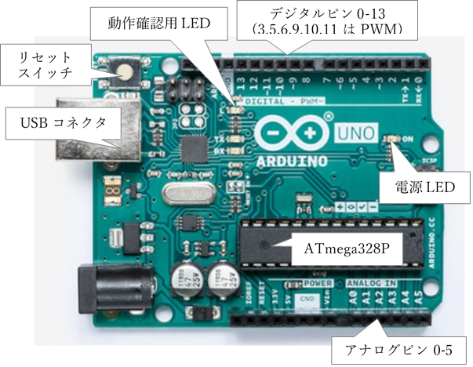
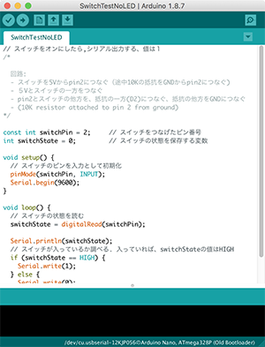

入出力のためのマイコンボード…Arduino

Arduinoはフィジカルコンピューティングのための道具です。マイコンボードであるArduinoボードとそのためのプログラムを作成するプログラミング環境からなります。Arduinoボードは、入力としてセンサやスイッチを、出力としてモータやLEDなどを接続し、マイクロコントローラー(マイコン)の中に書き込まれたプログラムによってそれらをコントロールする機能をもちます。I/Oボードとも呼ばれます。
電子工学(エレクトロニクス)技術を使って、人の行動や環境の変化にインタラクティブに応答する「デザイン」のプロトタイプを制作するのに役立ちます。Arduinoを使うと電子工学の専門的知識がなくても、比較的容易にプロトタイプをつくることができます。
ここでは主にArduinoのプログラミングについて説明します。
Arduino Unoボードを使うための超基本的知識を別の資料にまとめました。詳細は公式サイトや次の書籍を参考にしてください。
- ・Arduinoホーム
- ・Arduinoをはじめよう第2版, Massimo Banzi, オライリージャパン
Arduinoプログラミング環境(IDE)

Arduinoプログラミング環境(IDE)は、
Arduinoホームからダウンロードします。
IDEはProcessing言語で開発されており、左図のようにユーザインタフェイスもProcessingの環境とよく似ています。
簡単な編集機能を備えたエディタとプログラムの検証、プログラムをボードに書き込む機能をもちます。上部にプログラムの検証や保存を行うボタンが並び、その下がプログラムを編集するエディタになっています。
Arduinoでもプログラムのことをスケッチと呼び、スケッチを保存すると、スケッチにつけた名前のフォルダが作成され、その中に拡張子inoのファイルができます。これがArduinoプログラムのソースコードです(テキストファイル)。
ウィンドウ下部の黒い背景の部分は、コンソールで、プログラム検証中や書き込み中に起こったエラーやシステムからのメッセージなどが表示されます。
IDEのボタンの機能
メニューバーの下、ボタンアイコンが並ぶ部分がツールバーです。 ツールバー上のアイコンは、左から順に次のような機能です。- ■検証(Verify)：チェックマークのアイコンはプログラムの検証です。プログラムにエラーがないと「コンパイルが完了しました」とのメッセージが表示されます。プログラムがArduinoボード上で実行可能な形にコンパイル(翻訳)されたことを意味します。この時、コンソールにプログラムの大きさが表示されます。
- ■アップロード:マイコンボードにコンパイルしたプログラムを書き込みます。アップロードが正しく行われると「アップロード完了」のメッセージが表示されます。ボードにプログラムを書き込むには、[ツール]メニューで、ボード、プロセッサ、シリアルポートが適切に設定されている必要があります。これについては次節を参照してください。
- ■新規ファイル(New):新しいスケッチ(プログラム)を作ります。スケッチの基本パターンがあらかじめ用意された空のスケッチが表示されます。
- ■開く(Open)：既存のプログラムをエディタ上に開きます。スケッチのサンプルリストが表示され、そこから参考にするスケッチを選択できます。リストの先頭を選択すると任意のファイルを指定できます。
- ■保存(Save)： 画面上に表示しているプログラムを保存します。まだ一度も保存していないプログラムの場合は名前を付けて保存する場所と名前を指定するダイアログウィンドウが現れます。ここで入力した名前のフォルダ(スケッチフォルダ)が作られ、その名前で拡張子がinoのファイルにプログラムが保存されます。既存のプログラムの場合は上書き保存になります。
- ■シリアルモニタ：右端のアイコンは、シリアルモニタで、Arduinoボードが送信する値を表示したり、またArduinoボードに値を送ることができます。
ボード、プロセッサ、シリアルポートの設定
Arduinoボードにプログラムを書き込むには、ボード、プロセッサ、シリアルポートを適切に設定する必要があります。- ■ボード：メニューの[ツール]の[ボード]から使用しているマイコンボードを選択します。
- ■プロセッサ：メニューの[ツール]の[プロセッサ]から使用しているマイコンボードのプロセッサを選択します。ArduinoはマイクロコンピュータとしてAtmega328pを採用しています。Arduinoボードにスケッチを書き込むためのブートローダのバージョンによって、書き込みエラーが起こる場合があり、その場合はATmega328P(Old Bootloader)を選択してみてください。
- ■シリアルポート：メニューの[ツール]の[シリアルポート]から使用するシリアルポートを選択します。
Arduinoの言語仕様
Arduinoプログラミング環境(IDE)のメニューの[help] には基本的な解説へのリンクがあります。[リファレンス]からは言語仕様の一覧が見られます。次のURLからも参照できます。
Language Reference (www.arduino.cc/reference/en/)